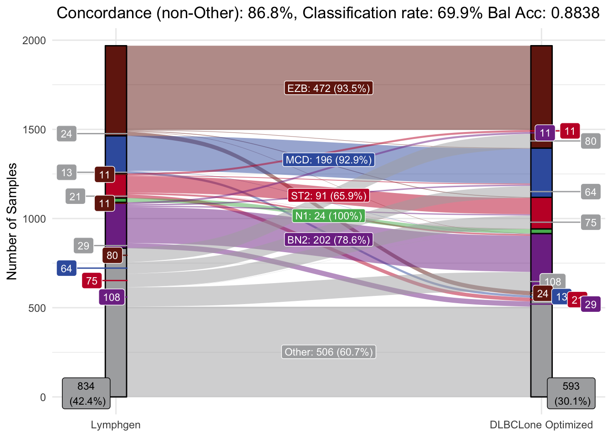
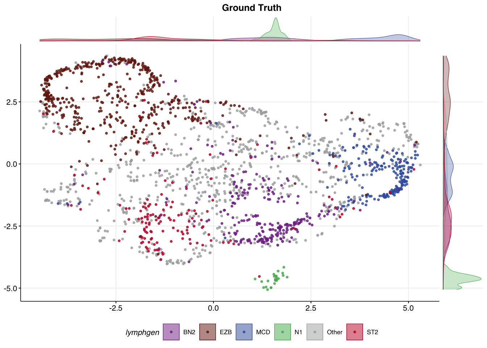

all_features_optimized = DLBCLone_optimize_params(
#mu_everything$features,
metadata_df = dlbcl_meta_clean,
umap_out = mu_everything,
truth_classes = c("MCD","EZB","BN2","N1","ST2","Other"),
min_k=5,
max_k=13
)Training a new DLBCLone model
Preamble
If you do not have a DLBCLone model suitable for your application, you can train a custom model to meet your needs. The training process leverages bundled mutation data and LymphGen classifications for over 2000 DLBCLs. Once you have a model you’re satisfied with, it can be applied to your own data using DLBCLone_predict.
Optimizing parameters
The DLBCLone_optimize_params function tunes the K value and a few thresholds based on the training data, working to maximize balanced accuracy or (optionally) another metric. The required and commonly used arguments are:
-
combined_mutation_status_dffeature matrix data frame with one row per sample and one column per mutation
Confusingly, this argument is no longer required. The mutation status is stored in the output of make_and_annotate_umap
metadata_dfdata frame of metadata with one row per sample and three required columns: sample_id, dataset and the column containing the “truth” lable, which defaults to lymphgenumap_outthe output ofmake_and_annotate_umaptruth_classesvector of classes to use for training and testing (LymphGen default: c(“EZB”, “MCD”, “ST2”, “N1”, “BN2”, “Other”))min_klowest k in the range of values to try for KNN (default: 3). Set higher to restrict to a narrower range.max_khighest k in the range of values to try for KNN (default: 33). Set lower to restrict to a narrower range.
Example
If you’re here, then we assume you’ve run make_and_annotate_umap and are generally happy with the separation of samples in this latent representation. We can use DLBCLone_optimize_params to automate finding an optimal K value (number of neighbors) and a few thresholds to categorize each sample based on its location and proximity to other points in the UMAP. Here, you provide the original UMAP produced by make_and_annotate_umap and not the re-projected UMAP, because this function will perform the sample-by-sample projection for us.
knitr::kable(all_features_optimized$best_params)| k | threshold | use_weights | optimized_accuracy | overall_accuracy | mean_balanced_accuracy | sensitivity | N1_sn | BN2_sn | ST2_sn | BN2_bacc | MCD_bacc | EZB_bacc | A53_bacc | Other_bacc | C1_bacc | C2_bacc | C3_bacc | C4_bacc | C5_bacc | ST2_bacc | threshold_outgroup | accuracy_out | na_option | num_classes | num_features | seed |
|---|---|---|---|---|---|---|---|---|---|---|---|---|---|---|---|---|---|---|---|---|---|---|---|---|---|---|
| 13 | 0.6 | TRUE | 0.898813 | 0.6383951 | 0.898813 | 0.8749128 | 1 | 0.8054475 | 0.6956522 | 0.8454807 | 0.9306097 | 0.9162663 | NA | 0.6258829 | NA | NA | NA | NA | NA | 0.8022226 | 0 | 0 | drop | 6 | 90 | 12345 |
Overview of classifications
make_alluvial
There is a convenience plotting function make_alluvial generates alluvial plots that summarize the relationship between original (e.g., Lymphgen) and predicted (e.g., DLBCLone) class assignments for a set of samples. Typically, you would use these to evaluate how well your model performs across each of the classes. The only required argument is the DLBCLone model, for example, the output of DLBCLone_optimize_params. Some additional arguments that are commonly used:
pred_columnname of the column in predictions to use for the predicted class. This is usually one of DLBCLone_wo or DLBCLone_w, respectively for DLBCLone with or without outgroup optimizationpred_nameDisplay name for the predictions (e.g. DLBCLone)
make_alluvial(all_features_optimized,
pred_column = "DLBCLone_wo",
pred_name = "DLBCLone Optimized")
make_alluvial(all_features_optimized,
pred_column = "DLBCLone_w",
pred_name = "DLBCLone Greedy")
make_umap_scatterplot
An overview of the classification result can also be visualized in our UMAP space. It can be useful to compare the UMAP coloured the ground truth labels to the new labels produced by DLBCLone.
make_umap_scatterplot(
all_features_optimized$prediction,
colour_by = "lymphgen",
title = "Ground Truth"
)
make_umap_scatterplot(
all_features_optimized$prediction,
colour_by = "DLBCLone_wo",
title = "DLBCLone Optimized"
)